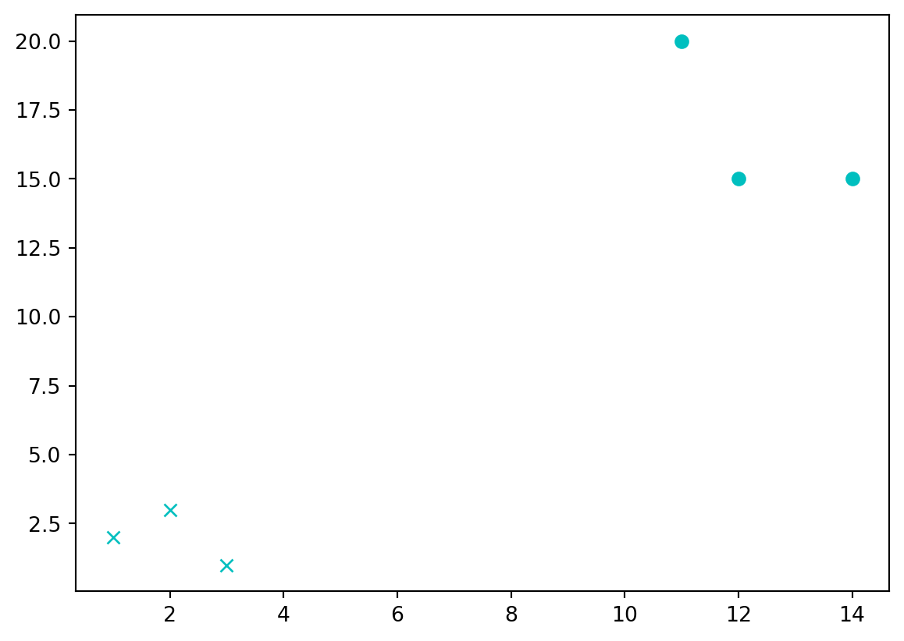

training_set = {'Dog':[[1,2],[2,3],[3,1]], 'Cat':[[11,20],[14,15],[12,15]]}
testing_set = [15,20]
#ploting all data
import matplotlib.pyplot as plt
c = 'x'
for data in training_set:
print(data)
#print(training_set[data])
for i in training_set[data]:
plt.plot(i[0], i[1], c, color='c')
c = 'o'
plt.show()Dog
Cat